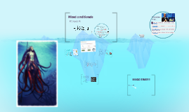

SUBMERGED DILEMMA QUESTION (FROM PREZI SLIDE 4):
"If you could have chosen your nationality at birth, which one would you want to be today?"
🎯 Authentic Prezi Challenge: "BINGO TIME!!!"
Listen to the candidate's response or formulate your own. Click each C1 structural tile as soon as it is deployed in natural speech:
If + Had V3 ...
Would + V1 (Present)
Would + V1 (Present)
If + Past Simple ...
Would have + V3 (Past)
Would have + V3 (Past)
"Had I known..."
(Inversion)
(Inversion)
"Were it not for..."
(Present Trait)
(Present Trait)
"Provided that..."
(Alternative to If)
(Alternative to If)
"Unless I..."
(Condition)
(Condition)
"Even if I try..."
(Contrast)
(Contrast)
"..., thereby preventing..."
(Participle Result)
(Participle Result)
Model Structure (Past Action → Present Reality):
"**If I had invested** in bilingual fluency a decade ago, I **would not be encountering** these professional language barriers today."
"**If I had invested** in bilingual fluency a decade ago, I **would not be encountering** these professional language barriers today."